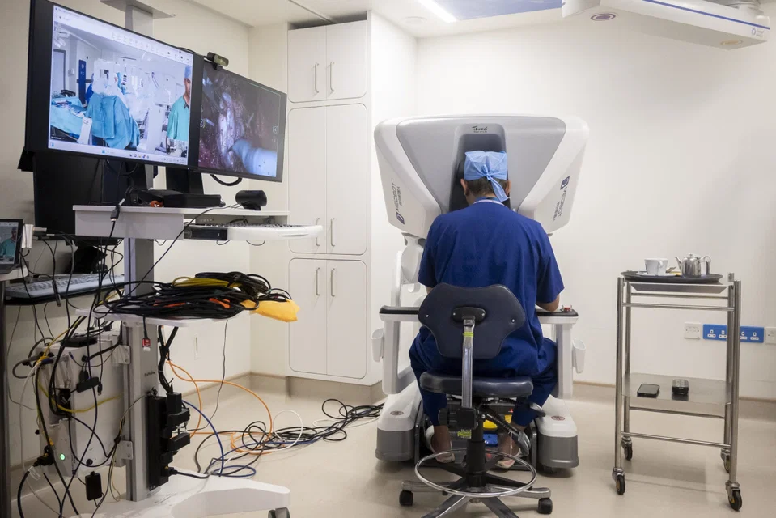

Robotic / remote surgery
What is it?
Robotic surgery is a type of minimally invasive surgery that uses robotic systems to assist surgeons in performing complex procedures with precision and control. It allows for smaller incisions, reduced blood loss, and faster recovery times compared to traditional open surgery.
History of Robotic Surgery and remote surgery
The history of robotic surgery dates back to the late 20th century when the first robotic surgical systems were developed. The da Vinci Surgical System, introduced in 2000, became one of the most widely used robotic platforms for various surgical procedures. Remote surgery, also known as telesurgery, allows surgeons to perform operations on patients from a distance using robotic systems and telecommunication technology. This concept has been explored since the early 2000s and has the potential to provide access to specialized surgical care in remote or underserved areas. It was finally successfully conducted in March 2026 in Gibaltar on a patient 2400 km away.

Click here to find out more